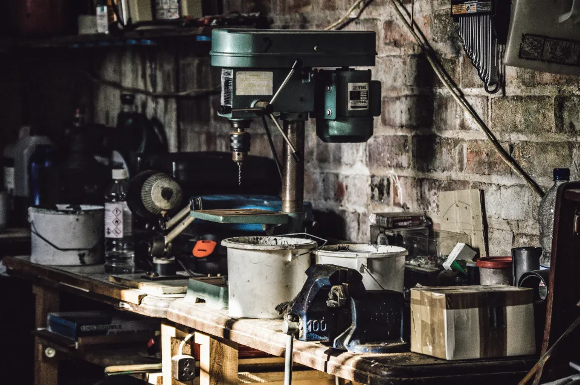
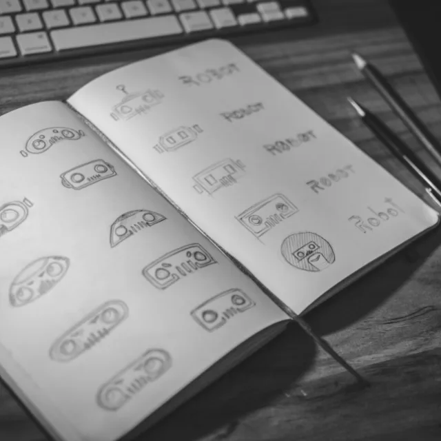
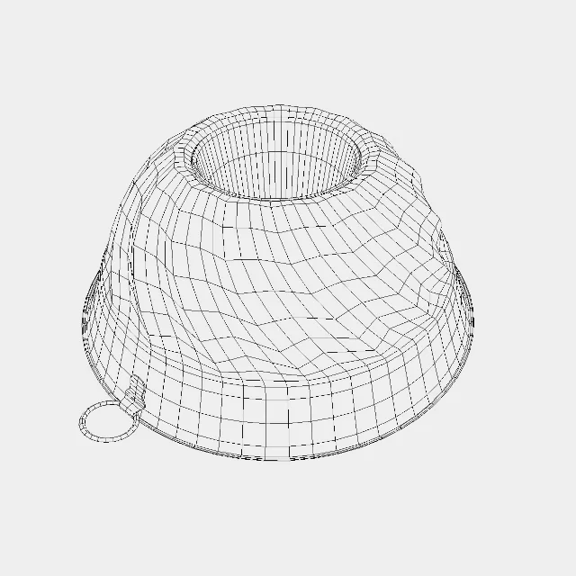
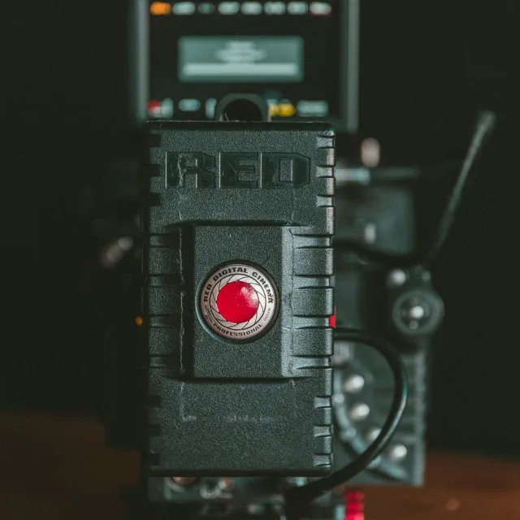
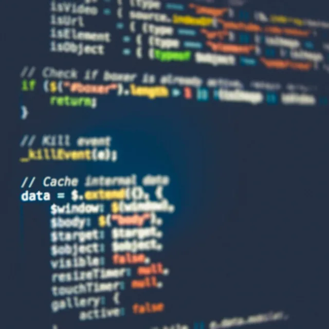

What we do

Five practices and seventeen disciplines under one roof — that is the range of what we offer at Shimti Multimedia. Every project gets everything we have, and every project is held to the same standard: work we are prepared to put our name on.
Design & identity

Logo design, graphic design, illustration, and print & apparel. The mark, the system it lives in, and the physical objects it ends up on. Drawing by hand sits here too, which is what keeps an identity from looking assembled out of the same shapes everyone else is using.
3D & interactive

3D modelling, game development, and software prototyping. Models published across six marketplaces, and the engineering to put them somewhere a person can move around in. Prototyping belongs in this group rather than with the web work: the point of it is to find out whether an idea holds up while it is still cheap to change.
Film & photography

Videography, video editing, animation, and photography. Shooting it, cutting it, grading it, and animating what could not be shot. One practice rather than four, because in practice they are one job that happens to use four sets of tools.
Sound
Music production and sound design. The half of a moving picture that audiences feel without noticing, and the half that is usually bought last and rushed.
Digital

Web design, digital publishing, social media management, and AI workflows. Building the thing, publishing it, and keeping the presence around it alive afterwards — including running pages on behalf of other people, which is its own discipline and not a by-product of design.
AI-powered
All of it is AI-powered now, and that is precisely why the range is possible at a professional standard rather than an amateur one. The tooling has collapsed the distance between disciplines: work that used to need a department, a pipeline and a schedule to match can be done properly by one person who understands the craft underneath it. The judgement is still human. The speed is not. How that turns into a project is in How we work.